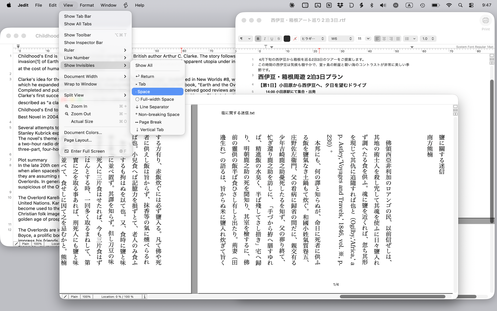
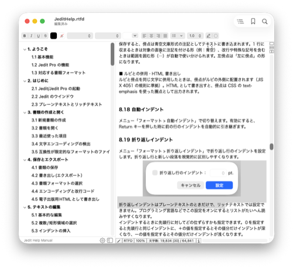
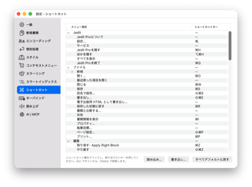

Jedit Pro について
Jedit Pro は、無料の Jedit に旧版 Jedit Ω 由来の高度な編集機能を加えた上位版テキストエディタです。Jedit のすべての機能に加えて、複数ファイルにまたがる検索・置換、書類比較、青空文庫ルビ・傍点、強制改行、ソート、Unicode 正規化などを搭載し、長文・大量ファイルを扱う方や日本語の組版・処理を多用する方に向けた構成です。
※ 価格・公開時期は決定次第お知らせします。

Jedit との違い
Jedit Pro は Jedit が備える基本機能（複数フォーマット対応、横書き/縦書き、ページ表示、iCloud 同期、AppleScript、印刷機能、文字コード対応など）をすべて含みます。その上で、以下の Pro 専用機能が利用できます。
Pro 専用の主な機能
スマートインデックス
サイドバーに見出し一覧を自動生成。Markdown、HTML、プログラミング言語などに対応した抽出ルールをカスタマイズでき、ブックマークへの取り込みも可能です。

シンタックスカラーリング
プログラミング言語やマークアップ言語のキーワードを色分け表示。組み込み定義に加え、ユーザー定義のカラーリングを追加できます。

メニュー / キーバインドのカスタマイズ
メニュー項目のキーボードショートカット、およびテキスト編集時のキー操作を自由に変更できます。Emacs 風キーバインドの再現も可能。

青空文庫ルビ
青空文庫形式の注記（｜漢字《かんじ》）をルビとして実際に描画。縦書き・横書きのどちらでも、編集画面・印刷・HTML 書き出しのすべてでルビが反映されます。

傍点（圏点）
ゴマ点・丸・二重丸・白ゴマなど 9 種類の傍点に対応。左傍点やルビとの併用にも対応し、入力用のダイアログから選択して適用できます。
電子出版向け HTML 書き出し
ルビや傍点を含む書類を、電子書籍で扱いやすい HTML として書き出し。青空文庫の注記をそのまま Web / EPUB 向けのマークアップに変換します。
高品質な読み上げ
macOS 標準の音声に加え、Google Cloud Text-to-Speech の高品質な音声で書類を読み上げできます（API キーの設定が必要）。
AI クライアント連携 (MCP)
Claude Desktop などの AI クライアントから Jedit Pro で開いている文書を読み書きできる、MCP サーバー機能を搭載。セットアップ手順 →
ツールメニュー
テキスト処理に役立つコマンドを多数搭載し、下記の各種機能をワンクリックで実行できます。
強制改行・プレフィックス
指定した幅で行を折り返して LF を挿入。引用記号などのプレフィックスの付加・除去や、自動インデント保持にも対応。
ソート
行・単語単位のソート。降順、数値、日本語読み順、半角/全角・大文字/小文字・欧文補助記号の無視など細かく制御できます。
Unicode 正規化
NFC・NFD・NFKC・NFKD の各形式に対応。Mac/Windows 間のテキスト互換性確保や、文字コード問題の解決に役立ちます。
半角⇔全角変換
英数字、カタカナ、記号それぞれの半角/全角を細かく指定して変換。プリセット保存機能付き。
漢字部首の検出と変換
「⼈」「⽇」など部首単独文字を検出し、対応する標準 CJK 文字（人・日 など）に一括変換します。
整形・クリーンアップ
行頭/行末スペースの削除、タブ/スペースインデントの相互変換、重複行の削除・カウント、行の逆順並べ替えなど。
文字コード互換性チェック
指定した文字エンコーディングで保存できない文字を事前に検出。文字化けを防ぎ、該当箇所を確認できます。
その他のツール
URL 文字列への自動リンク付加、ひらがな⇔カタカナ変換、漢字→ひらがな変換、文字コード表示など。
Jedit Ω からの移行
旧版 Jedit Ω は 2025 年 11 月末をもって販売およびサポートを終了しました。新しい Jedit / Jedit Pro は、Jedit Ω をベースに全くゼロから書き直された後継エディタです。
無料版 Jedit では再実装を見送った Jedit Ω の機能のうち、以下は Jedit Pro でご利用いただけます。
- マルチファイル検索/置換機能
- 書類ファイルの比較機能
- Jedit Ω ツールメニューの各種機能
- シンタックスカラーリング
- スマートインデックス
- メニューショートカットのカスタマイズ
- キーバインドのカスタマイズ
システム要件
- macOS 15.6 以降
- Apple Silicon または Intel プロセッサ
サポート
バグ報告、機能リクエスト、その他のお問い合わせは下記までお願いします。
アートマン21 ユーザーサポート係
Email: support@artman21.co.jp